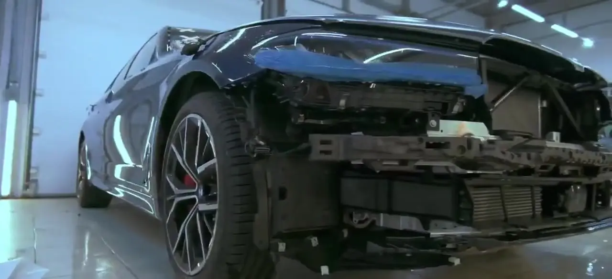
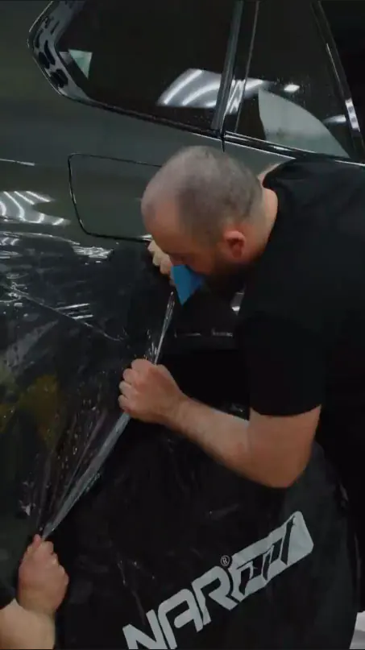
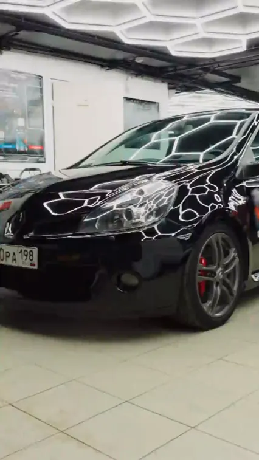
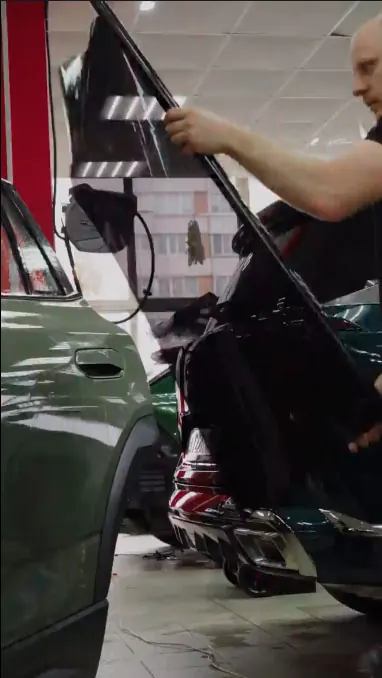
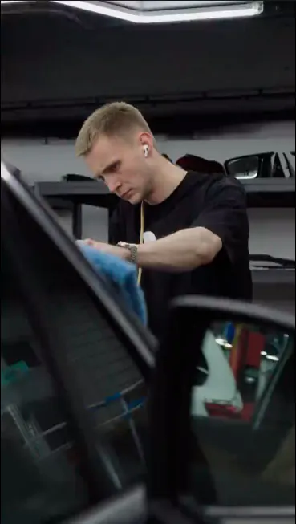
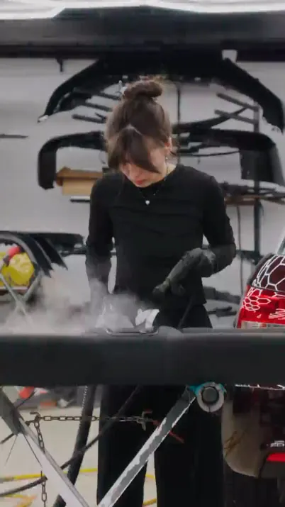
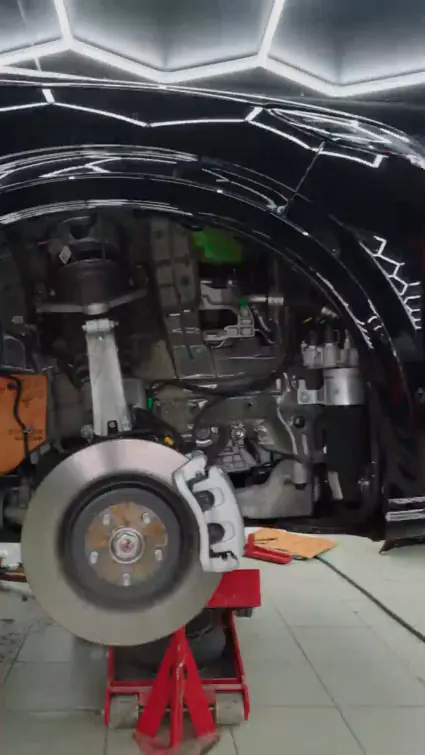
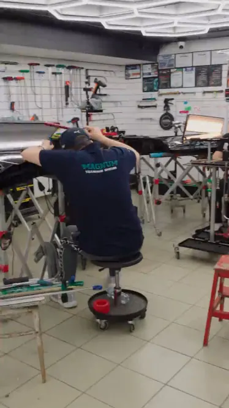

Детейлинг автомобиля, после которого снова влюбляются
- Полный спектр детейлинг-услуг
- Гарантия на все виды работ — на плёнку до 10 лет
- В деле с 2001 года
Что делаем в SRV
Комплексная, максимально тщательная обработка автомобиля: восстановление, защита и улучшение внешнего вида — на уровне микрон по поверхности, коже, пластику и стеклу.

Оклейка защитной плёнкой
Полиуретановая плёнка PPF принимает удары камней, песка и реагентов на себя — заводская краска остаётся целой.
от 8 000 ₽
Керамика и жидкое стекло
Составы Krytex высокой твёрдости дают глубокий глянец и гидрофобный эффект: вода, грязь и реагенты скатываются, кузов дольше остаётся чистым.
от 15 000 ₽
Тонировка стёкол
Тонируем заднюю полусферу, лобовое и передние стёкла — атермальной или затемняющей плёнкой, в рамках ГОСТа.
от 2 000 ₽
Полировка кузова
Полировка возвращает кузову глубину цвета и зеркальный блеск: убирает паутинку, голограммы, мелкие царапины и окисление.
от 2 000 ₽
Химчистка салона
Убираем пятна, пыль, бактерии и запахи, которые копятся годами.
от 2 000 ₽
Шумоизоляция
Шум шин, двигателя, гравия и ветра утомляет в дороге.
от 35 000 ₽
Удаление вмятин без покраски
Технология PDR выправляет вмятины с сохранением заводского покрытия — без шпаклёвки, покраски и сушки.
по осмотруОнлайнСхема защиты плёнкой
Отметьте детали на фото автомобиля — цена, срок и подарки посчитаются сразу.
Открыть расчёт →Схема покрытия плёнкой
Выберите пакет или нажмите на детали прямо на фото. Капот и крыша — по кругу: полоса → целиком. Режим «Где летят сколы» покажет зоны риска.
Евротонировка задней полусферы
Задние боковые и заднее стекло, плёнка с гарантией 10 лет. Акция до 31 октября.
Не знаете, с чего начать?
Машины из нашего бокса
Каждый проект — серия фото до выдачи клиенту. Нажмите, чтобы листать.
Основные направления детейлинга
Экстерьер
- Мойка и деконтаминация
- Полировка ЛКП
- Защитные покрытия и плёнка
- Стёкла и оптика
- Диски и шины
Интерьер
- Химчистка салона
- Уход за кожей
- Пластик и резина
- Озонирование
- Стёкла изнутри
Специальные работы
- Подкапотное пространство, арки и днище
- Удаление вмятин и царапин
- Подготовка к зиме
- Предпродажная подготовка
| Параметр | Обычная мойка | Детейлинг |
|---|---|---|
| Цель | Убрать грязь | Восстановить и защитить |
| Глубина | Поверхностная | Работа с микродефектами ЛКП |
| Время | 20–60 минут | От нескольких часов до нескольких дней |
| Материалы | Щётки, шампунь | Полировальные пасты, полироли, керамика |
| Результат | Чисто | «Как новый» или лучше |
Больше, чем уход за авто
До 10 лет на материалы
На некоторые работы — пожизненная гарантия. Прозрачные цены без скрытых доплат.
Чистые тёплые боксы
Профессиональное оборудование, яркий свет, контроль температуры и влажности. Зона ожидания с Wi-Fi и кофе.
25+ лет практики
Сертифицированные мастера, регулярное обучение, плёнки всех известных брендов.
Мы заботимся о вашем автомобиле, как о своём. Объясним, покажем, подскажем — без скрытых доплат.
Роман Савочкин, руководитель SRV · Задать вопрос руководителю
Как мы работаем
Ролики из бокса на Симонова, 11.
Что ещё можно сделать в детейлинге
Сколы и царапины
Точечная подкраска с последующей полировкой.
Подкапотное, арки, днище
Аккуратная мойка двигателя с защитой разъёмов, мойка арок и днища.
Подготовка к зиме
Комплексная защита перед сезоном реагентов.
Предпродажная подготовка
В короткий срок поднимем вид авто в идеальном сочетании «результат / вложения».
Что говорят клиенты
Рейтинг 5,0 и знак «Хорошее место» на Яндекс Картах.
Команда, которой можно доверить машину
Сертифицированные мастера с многолетним опытом. Каждая машина проходит обработку по выверенной технологии, под контролем мастера на каждом этапе.
Полезные статьи
Уход, защита, тонировка и шумоизоляция — простыми словами.
Частые вопросы
Чем детейлинг отличается от мойки?
Мойка убирает грязь за 20–60 минут. Детейлинг восстанавливает и защищает: работа с микродефектами ЛКП, полировка, керамика и плёнка — от нескольких часов до нескольких дней.
Сколько займёт оклейка плёнкой?
Фары — около часа, лобовое стекло — 5–6 часов, зоны риска — сутки, полная оклейка — от 3 дней.
Какая гарантия?
На материалы — до 10 лет, на некоторые работы — пожизненная. Гарантия распространяется на все виды работ.
Можно приехать без записи?
Да, с понедельника по субботу с 10:00 до 20:00. В воскресенье — только по предварительной записи.
Цены окончательные?
Цены «от» — для типового легкового автомобиля. Итог зависит от сложности кузова и может быть ниже прайса: мастер назовёт точную сумму до начала работ и зафиксирует её.
Записаться или задать вопрос
Оставьте телефон — мастер перезвонит, ответит на вопросы и подтвердит время. Без записи тоже можно: ПН–СБ 10:00–20:00.
ЗАПИСИ
Приезжайте ПН–СБ с 10:00 до 20:00. В воскресенье — по предварительной записи.